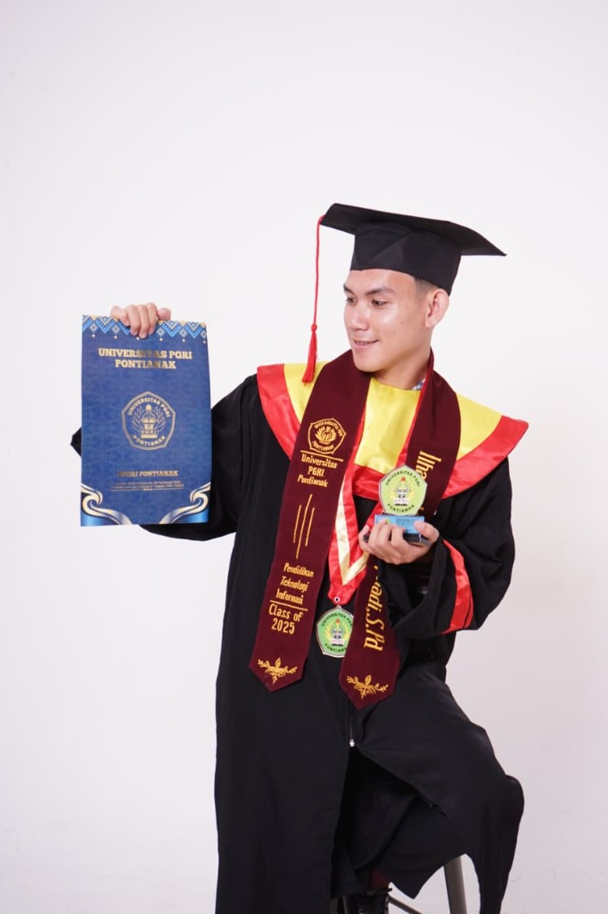

Identifikasi Diri & Komitmen Profesional
Peta Jalan Visi Transformatif Pendidikan Indonesia, Kompas Moral Guru Masa Depan, dan 6 Pilar Aksi Nyata Dedikasi bagi Kemajuan Pendidikan Daerah.

Ilham Kurnia Septiadi, S.Pd.
"Pendidikan, bagi saya, bukan sekadar proses mentransfer pengetahuan, tetapi jalan untuk membangun kualitas sumber daya manusia yang mampu memajukan daerahnya dan Indonesia secara berkelanjutan. Lahir dan berakar dari Kecamatan Jelai Hulu, Kabupaten Ketapang, Kalimantan Barat, saya bertekad menjadi pendidik yang tidak hanya hadir di dalam ruang kelas, melainkan hadir sebagai suluh pemantik inspirasi bagi generasi muda di pelosok negeri."
Kompas Utama
Visi Pendidikan Indonesia
Visi Pribadi
Guru Pembelajar Reflektif
Peta Aksi
6 Pilar Misi Profesional
Fokus Pengabdian
Pemerataan Kualitas 3T
Pemerataan Kualitas & Keadilan Akses Tanpa Sekat Geografis
Pendidikan berkualitas bukan hak istimewa murid di perkotaan besar, melainkan hak fundamental seluruh anak bangsa. Anak-anak di pelosok, perbatasan, dan daerah 3T—termasuk di pedalaman Kalimantan Barat—berhak memperoleh fasilitas, akses teknologi, dan mutu pengajaran yang setara agar tidak ada potensi yang terkubur oleh keterbatasan wilayah.
Penguatan Guru sebagai Penggerak Utama Pembelajaran
Kualitas sistem pendidikan tidak akan pernah melampaui kualitas gurunya. Transformasi pendidikan berawal dari pendidik yang memiliki kesadaran belajar sepanjang hayat. Guru yang terus mengembangkan diri akan mentransmisikan kecakapan berpikir kritis, literasi kontekstual, kematangan numerasi, dan budi pekerti luhur bagi generasi penerus.
Pembangunan SDM Berkelanjutan bagi Kemandirian Daerah
Pendidikan dipandang sebagai investasi peradaban jangka panjang. Dengan menghasilkan generasi muda yang terdidik, berdaya cipta, dan memiliki kesadaran lokal, daerah-daerah berkembang akan mampu mengelola potensi alam dan budayanya secara mandiri, mengentaskan kemiskinan, dan mempercepat kemajuan Indonesia secara berkesinambungan.
Pembelajar Sepanjang Hayat & Pendidik Reflektif
Memandang proses menjadi guru bukan garis finis, melainkan perjalanan evolusi tanpa batas (lifelong learning). Menjadikan praktik refleksi harian sebagai cermin untuk membedah kelemahan proses ajar, terus mengasah kompetensi pedagogik dan teknologi, serta berjiwa lentur dalam menghadapi dinamika kurikulum masa depan.
Pembelajaran Bermakna & Berpusat pada Murid
Menggeser paradigma pengajaran dari sekadar penuntasan silabus menuju pembelajaran berpusat pada murid (student-centered). Merancang pengalaman belajar informatika yang autentik, relevan dengan kehidupan nyata peserta didik, serta menghormati kodrat alam dan kodrat zaman setiap individu.
Pembangun Nalar Kritis, Literasi, & Karakter
Berfokus pada pengembangan kecakapan berpikir komputasional (computational thinking), literasi informasi etis, serta penguatan Profil Pelajar Pancasila. Murid tidak hanya diarahkan menjadi konsumen pasif teknologi, melainkan pencipta solusi berkarakter tangguh, kreatif, dan percaya diri.
Katalisator Kolaborasi & Agen Perubahan Ekosistem
Menolak isolasi profesionalisme individu. Membuka pintu ruang kelas untuk berkolaborasi, mendiseminasikan praktik baik (sharing best practices), serta memantik sinergi rekan sejawat demi mengangkat kualitas iklim pembelajaran sekolah dan kemajuan pendidikan di daerah pengabdian.
Untuk mewujudkan visi besar pendidikan Indonesia dan visi pribadi sebagai pendidik masa depan, saya merumuskan enam pilar misi strategis yang operasional, terukur, dan berakar pada komitmen pengabdian berkelanjutan:
Mengembangkan Kompetensi Diri secara Berkelanjutan
- Meningkatkan kompetensi pedagogik, profesional, sosial, dan kepribadian melalui Program Pendidikan Profesi Guru (PPG), pelatihan bersertifikasi, seminar akademik, dan komunitas belajar guru.
- Mengikuti perkembangan teknologi mutakhir dan inovasi pembelajaran digital agar senantiasa mampu menghadirkan kurikulum informatika yang relevan dengan kebutuhan industri dan era masyarakat 5.0.
- Menjadikan refleksi kritis sebagai kebiasaan rutin pasca-mengajar untuk mendiagnosis kendala kelas dan memprogramkan perbaikan kualitas pembelajaran secara berkelanjutan.
Menciptakan Pembelajaran yang Berpusat pada Murid
- Merancang modul dan skenario pembelajaran yang bermakna, interaktif, aktif, serta terkonfigurasi secara adaptif sesuai tahap kesiapan belajar peserta didik (Teaching at the Right Level / TaRL).
- Memanfaatkan perangkat teknologi secara bijak, etis, dan produktif sebagai katalisator eksplorasi dan media penciptaan solusi, bukan sekadar instrumen konsumtif.
- Menumbuhkan daya nalar kritis, kecakapan literasi digital, budi pekerti luhur, kreativitas algoritmik, dan rasa percaya diri peserta didik dalam mempresentasikan gagasannya di depan umum.
Menjadi Guru yang Kolaboratif dan Inspiratif
- Berbagi praktik baik (best practices) secara transparan kepada rekan sejawat melalui forum diskusi ilmiah, lesson study berkala, dan komunitas belajar sekolah.
- Berkolaborasi erat lintas mata pelajaran dalam mengembangkan inovasi media ajar, lembar kerja terintegrasi, dan proyek penguatan Profil Pelajar Pancasila (P5) yang berdampak nyata.
- Menjadi rekan belajar yang suportif dan inspiratif guna mendorong peningkatan standar profesionalitas pendidik secara kolegial dan bersama-sama.
Mengembangkan Budaya Belajar di Sekolah
- Mendorong terbangunnya iklim satuan pendidikan yang inklusif, kolaboratif, aman, dan sarat refleksi, sehingga seluruh warga sekolah merasa dihargai dan termotivasi untuk bertumbuh.
- Menginisiasi program-program pembiasaan terpadu yang memperkuat literasi informasi, numerasi kontekstual, kematangan karakter, serta keterampilan abad ke-21 murid.
- Membantu manajemen sekolah membangun tata kelola akademik yang berorientasi pada penjaminan mutu proses pembelajaran berkelanjutan berbasis data rapor pendidikan.
Berkontribusi bagi Kemajuan Pendidikan di Daerah Asal
- Mengabdikan segenap kapasitas keilmuan dan kompetensi profesional untuk meningkatkan mutu pendidikan di Kecamatan Jelai Hulu dan Kabupaten Ketapang.
- Menjalin kemitraan kolaboratif strategis antara pihak sekolah, tokoh masyarakat adat, orang tua wali, dan dinas pendidikan daerah demi memecahkan kendala pendidikan lokal.
- Turut mengambil inisiatif dalam pendampingan literasi TIK, pelatihan metode ajar kreatif, dan diseminasi bahan ajar digital bagi rekan-rekan guru di pelosok daerah.
Mewujudkan Pemerataan Kualitas Pendidikan
- Berkontribusi nyata dalam mengakselerasi kualitas sumber daya manusia melalui layanan pendidikan yang adil, inklusif, dan tidak meninggalkan anak-anak pelosok di belakang.
- Menjadi guru profesional yang berintegritas tinggi serta mampu memberikan resonansi dampak transformatif tidak hanya bagi murid di kelas, tetapi juga sekolah, masyarakat, dan daerah.
- Mengadvokasi pemerataan sarana digital dan kecakapan masa depan agar putra-putri daerah mampu bersaing secara setara di kancah nasional maupun global.